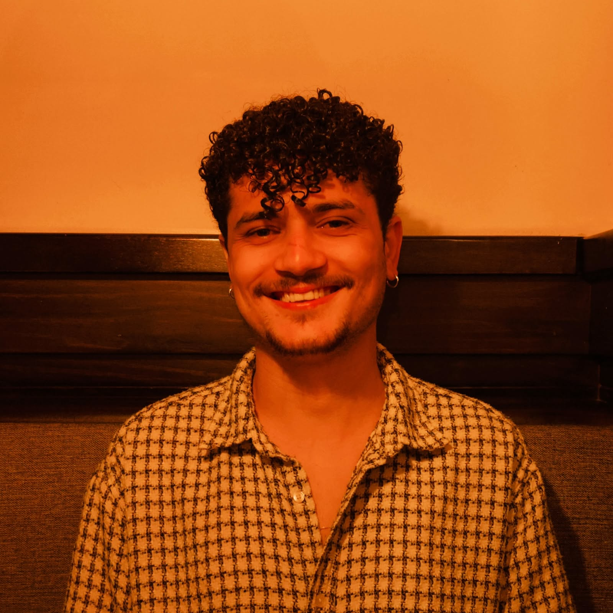

Olá, eu sou Rikelme!
Sou estudante de Sistemas de Informação na Universidade Vila Velha (UVV) e atualmente trabalho como Analista I de Customer Experience na área de suporte técnico.
Tenho interesse por tecnologia, programação e análise de dados. Meu objetivo profissional é trabalhar futuramente na área de Ciência de Dados.
Conheça meu currículo
Sobre mim
Minha trajetória profissional começou na área administrativa, onde trabalhei como auxiliar administrativo. Atualmente atuo com suporte técnico e Customer Experience, experiência que contribui para meu desenvolvimento profissional e pessoal.
Na faculdade venho aprendendo diferentes áreas da tecnologia, incluindo desenvolvimento Web, programação, banco de dados e experiência do usuário.
Minhas habilidades
- HTML
- CSS
- Java
- Python
- Suporte técnico
- Atendimento ao cliente
- Resolução de problemas
- Inglês avançado
- Espanhol intermediário
Meus hobbies e interesses
🎬 Cinema e cultura pop
Gosto muito de cultura pop e frequentemente assisto filmes no cinema. Também acompanho temporadas de premiações. Meu filme favorito é Scream (1996).
Uma das cenas que mais gosto do filme é a sua cena de abertura. Abaixo está o vídeo da opening scene de Scream:
🎵 Música
Sou fã de música e também coleciono discos de vinil. Meu álbum favorito é Golden Hour, de Kacey Musgraves, e minha cantora favorita é Charli XCX.
Uma das músicas da Charli XCX que gosto é Wink Wink:
🏐 Vôlei
Sou amante e fã de vôlei, acompanho a liga nacional e competições internacionais e também pratico o esporte.
Também sou torcedor do Sesc Flamengo, equipe que acompanho nas competições nacionais.

Minha vida acadêmica
| Formação | Instituição | Situação |
|---|---|---|
| Ensino Médio | Aristóbulo Barbosa Leão | Concluído |
| Sistemas de Informação | Universidade Vila Velha - UVV | Em andamento |
| Inglês | Aulas de inglês | Nível avançado |
| Espanhol | Aulas particulares | Nível intermediário |
Eventos e projetos acadêmicos
Durante minha graduação já tive contato com trabalhos acadêmicos e atividades relacionadas à tecnologia.
- Projetos de desenvolvimento Web
- Projetos de banco de dados
- Atividades de programação
- Projetos relacionados a UX
- Palestras e eventos acadêmicos
O que estou estudando
| Área | Conteúdo |
|---|---|
| Desenvolvimento Web | HTML e CSS |
| Programação | Java e lógica de programação |
| Banco de Dados | Modelagem e bancos de dados |
| UX | Experiência do usuário |
| Python | Fundamentos da linguagem |
Meu objetivo profissional
Quero continuar estudando tecnologia e programação para, futuramente, trabalhar profissionalmente na área de Ciência de Dados.
Entre em contato